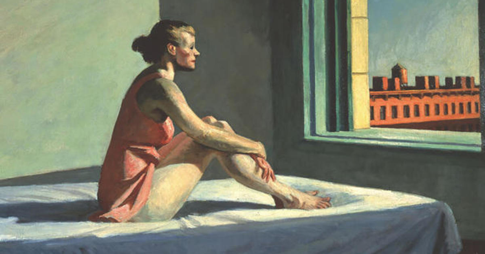

Ilustradora e Game Designer
Faço ilustrações digitais, encomendas de retratos, concepts de personagens, jogos e atualmente estou estudando Front-end.
Faço ilustrações digitais, encomendas de retratos, concepts de personagens, jogos e atualmente estou estudando Front-end.
Fiz esta página para atualizar sobre meus trabalhos, irei fazer updates assim que achar necessário!